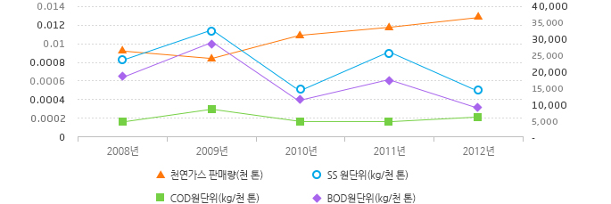

환경오염저감활동
수질오염
생활오수
해안에 위치한 평택, 인천생산기지의 경우 자체 오수처리시설에 의해 생활오수를 정화 후에 바다로 방류하고 있으며 통영생산기지와 관로운영지사 공급관리소의 생활폐수는 오폐수 종말처리장으로 보내져 처리되고 있습니다. 또한, 배출수의 오염물질 농도는 법적기준치(20ppm) 범위 이내에서 관리되고 있습니다.
공정폐수
KOGAS의 천연가스 생산 공정은 용수사용량이 미미하여 수질환경에 미치는 영향이 매우 적습니다. 인천생산기지는 수처리시설과 유수처리시설이 설치되어 있으며 여타사업장의 경우 모든 공정에 투입되는 용수를 설비 자체 내에서 순환시키므로 수질오염물질 배출이 없습니다. 그리고 LNG 기화공정에서 해수식기화기에 투입된 해수는 열 교환에 활용되고 나면 환경영향이 없이 연안으로 배출됩니다.
수질오염물질 배출량 및 원단위
| 구분 | 2008년 | 2009년 | 2010년 | 2011년 | 2012년 | |
|---|---|---|---|---|---|---|
| 천연가스 판매량(천 톤) | 26,345 | 24,644 | 31,202 | 33,570 | 36,547 | |
| BOD | 배출량(kg) | 169 | 250 | 111.9 | 201.6 | 104.6 |
| 원단위(kg/천 톤) | 0.0064 | 0.0100 | 0.0040 | 0.0060 | 0.0029 | |
| COD | 배출량(kg) | 47 | 79 | 56.1 | 61 | 82 |
| 원단위(kg/천 톤) | 0.0018 | 0.0032 | 0.0018 | 0.0018 | 0.0022 | |
| SS | 배출량(kg) | 217 | 286 | 155.7 | 295.7 | 182.6 |
| 원단위(kg/천 톤) | 0.0082 | 0.01160 | 0.00500 | 0.00880 | 0.00500 | |

| 구분 | 2008 | 2009 | 2010 | 2011 | 2012 |
|---|---|---|---|---|---|
| 천연가스 판매량(천 톤) | 26,345 | 24,644 | 31,202 | 33,570 | 36,547 |
| SS 원단위(kg/천 톤) | 0.0082 | 0.0116 | 0.005 | 0.0088 | 0.005 |
| COD원단위(kg/천 톤) | 0.0018 | 0.0032 | 0.0018 | 0.0018 | 0.0022 |
| BOD원단위(kg/천 톤) | 0.0064 | 0.01 | 0.004 | 0.006 | 0.0029 |